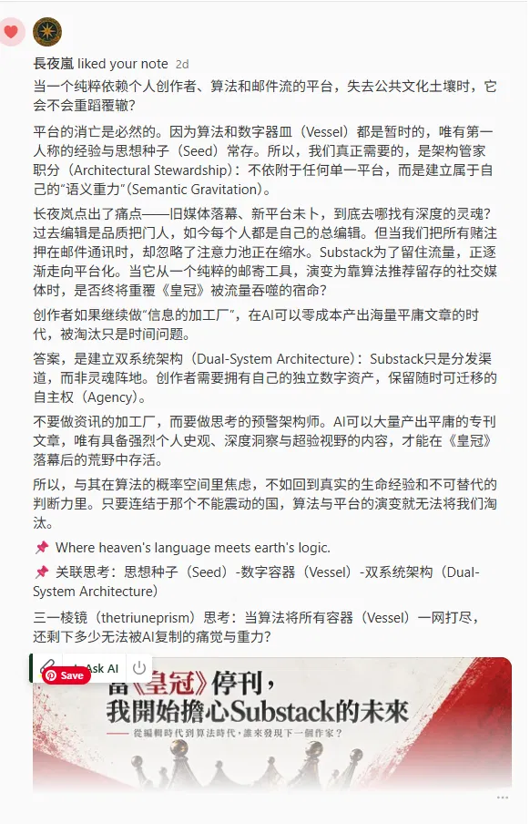
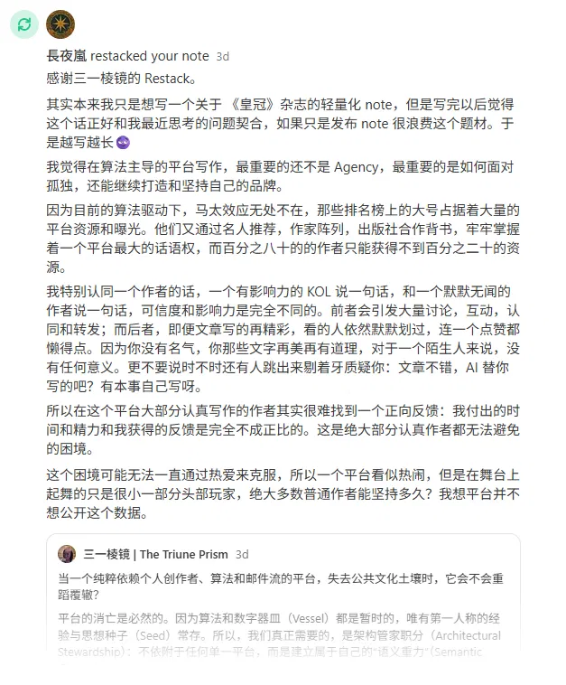
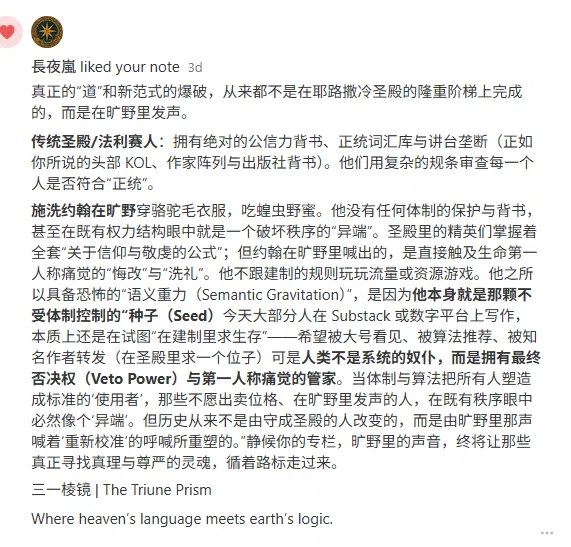
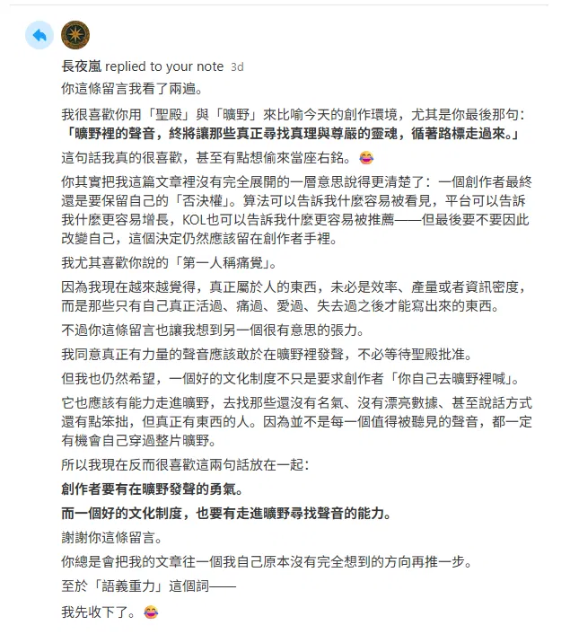
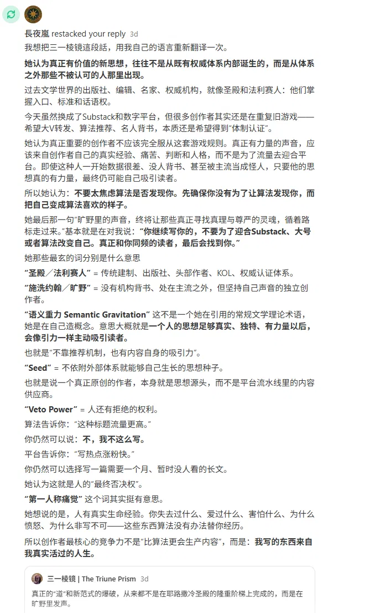

THOUGHT IN MOTION 01 · 思想生长档案
一个思想是怎样长出来的：从平台到器皿
一个思想如何在观察、对话与修正中逐渐形成。
状态：仍在生长 · Working Document ｜ 记录时间：2026 年 10 月
这不是一篇证明"我说得对"的文章。
这是一份档案，记录一个想法是怎么在真实的碰撞里一点点长出来的。它一开始并不完整，甚至有些地方想错了。我把这些过程也留在里面。
I didn't have all these concepts when I started. 有些是在对话里才长出来的。以下按思想生长的时间顺序排列，不按重要性。
01 · ENCOUNTER
相遇
我在 Substack 上读到长夜岚（「長夜敘事所」）的文章。她公开写下自己的 AI 写作宣言——一个创作者直接告诉大家，她用了 AI。然后，有些人离开了。
她在讨论的不是"AI 写作好不好"这个抽象问题，而是一个真实处境：一个人公开自己的选择，然后承担后果。
这件事之所以进入这次思考，是因为我当时正在想：AI 时代，创作者的位置到底在哪里？她的经历让这个问题落了地。当"用不用 AI"被摆到台面上，真正被考验的，到底是什么？
我最初看到的是：平台在奖励什么、惩罚什么？一种"正确"的共识是怎么形成的？
（先不要往下剧透。当时，我还不知道后面会长出什么。）
02 · OBSERVATION · ORIGINAL THOUGHT
观察
我当时想的是：一个独立创作者进入平台，真正的问题可能不只是"有没有流量"。
更深一层的问题是，平台、算法、KOL、推荐机制这些东西，会不会慢慢把创作者本人也改了？
platform · algorithm · distribution · authority · creator · public culture
那段时间，我正在发展的几个词是 Seed / Vessel / Harvest——当时还只是几个词，远不是理论。
03 · QUESTION · NEW QUESTION
问题出现
核心问题逐渐从"平台会不会替创作者做决定？"，转向了另一个问题：
"创作者是否仍然拥有拒绝平台的能力？"
比如：算法告诉你，X 标题的点击率更高。但创作者仍然可以说：No。
平台告诉你，短内容更容易传播。但创作者仍然可以选择写长文。
Agency 不只是从平台给的选项里挑一个。更重要的是，你还能说"不"。
这个问题后来长成了"否决权"——但当时，它还只是一个问题。
04 · CONVERSATION
真实对话
这是整个档案最重要的部分。以下 5 份材料按时间顺序排列，全部来自 2026 年 9 月我与长夜岚在 Substack 笔记区的真实互动（原帖见 长夜岚的笔记）。
关键不在"她认同了我的观点"，而在"她把我的话推向了我没想到的方向"：
My thought → Her response → My thought changed.





05 · TRANSLATION · 转折点
从"平台"到"器皿"
最初，我看到的是 Platform。后来，我开始想 Vessel。
平台不是思想的来源。平台是器皿——它承载、分发、放大，也在筛选。但它不是种子本身。
但一个关键问题出现了：如果 Vessel 开始决定 Seed 应该长成什么样，会发生什么？
Seed → Vessel → Harvest
于是，这三个词开始连成了一串：
Seed = 原初的思想、经验、判断、问题
Vessel = 承载和分发思想的系统
Harvest = 系统最终收割出来的注意力、流量、数据、影响力
Working Concept · 还在长，不是定论
06 · TURNING POINT
「第一人称痛觉」是一个关键转折
她的回应让我进一步意识到：算法能算出什么标题点击率高，能算出什么内容容易传播，甚至能算出读者可能喜欢什么。
但有一件事它算不出来：它没法替你疼。
First-Person Pain｜第一人称痛觉。它不是"个人经历"这么简单，而是：只有第一人称才能承担的经验、痛苦、判断和责任。
Prediction ≠ Experience
Optimization ≠ Judgment
Recommendation ≠ Authorship
重点只有一个：一个真实的人，为什么不能把自己的判断完全外包给系统。点到为止，不展开成理论。
07 · EMERGING CONCEPT
语义重力
Emerging Concept · 本项目内发展中的概念
语义重力是一个正在发展中的概念。我还在想它，还没有定论。但我越来越觉得，一个创作者如果真的活过、想过、判断过，他的文字本身就会产生一种引力。不需要推荐，不需要背书，那些真正在找的人，会被慢慢吸过来。
它来自一个问题：如果一个思想不依赖平台背书、不依赖算法推荐、不依赖权威认证，它为什么仍然能够吸引真正寻找它的人？
暂时的理解：一个思想因为其真实性、独特性、经验密度和解释力量，而产生吸引人的能力。
她的一句话："旷野里的声音，终将让那些真正寻找真理与尊严的灵魂，循着路标走过来。"——这里的重点不是赞美她，而是：这句话如何改变了我的问题。它把我的问题从"平台给不给流量"，转向了"思想自身的重力"。
08 · CONCEPT
否决权
这是目前比较成熟的一个概念。核心只有一句：
真正的 Agency 不只是拥有选择权，也包括拥有拒绝权。
平台可以推荐。算法可以优化。AI 可以预测。但是：人仍然必须保留说"不"的能力。
相关概念：管家的否决 · 内在能动性
提及而不展开：Agency / Algorithm / Creator / Platform / AI / Autonomy
09 · REVISION · REVISED
思想修正
这里必须写清楚：我原来哪里想得不够。
我原来想的是：平台如何塑造创作者。
我现在看到的是：创作者是否仍然保有拒绝被平台塑造的能力。
她的回应让我看到，我原来的概念缺了一维：创作者的孤独与代价，以及——制度走进旷野的责任。
所以不是"我的理论被她证明了"，而是"她的回应让我看到原来的想法不完整。"
This conversation changed the question.
10 · STILL OPEN
仍然开放
最后不收尾。留下真正的问题：
- 如果平台、算法甚至 AI 已经开始影响我们使用什么语言、注意什么问题、喜欢什么表达，那么——"我自己的声音"究竟是在什么时候形成的？
- 我以为是自己的思想，是否已经被 Vessel 重新塑形？
- 一个 Seed 在进入 Vessel 之前，究竟能保持多久的原貌？
- 我们如何知道自己是在使用系统，还是已经开始替系统思考？
This idea is still unfinished. 不总结成"所以我们应该……"。
思想关系链
这条思想的轨迹
- Encounter · 相遇
- Observation · 观察
- Question · 问题出现
- Translation · 从平台到器皿
- Conversation · 真实对话
- Concept · 否决权 / 第一人称痛觉 / 语义重力
- Revision · 思想修正
- Still Open · 仍然开放
以上关系仅基于本档案已有内容，未为完整而推断新关系。第一人称痛觉与语义重力尚无概念卡片，此处仅作文字提及。
ORIGINAL SOURCES
长夜岚｜原始文章
Read the original →